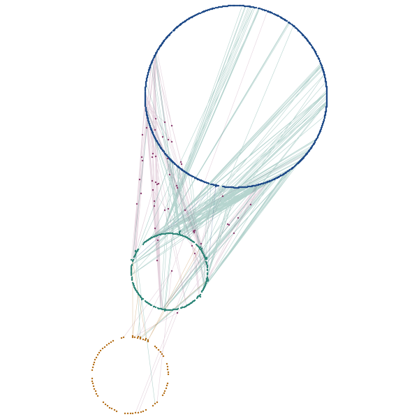
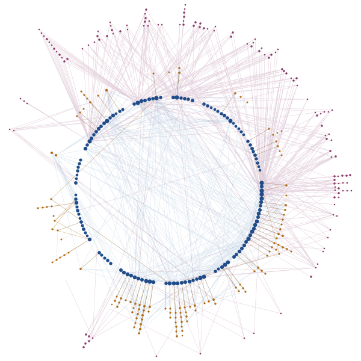
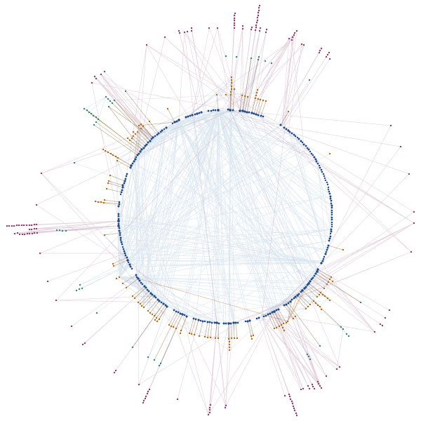
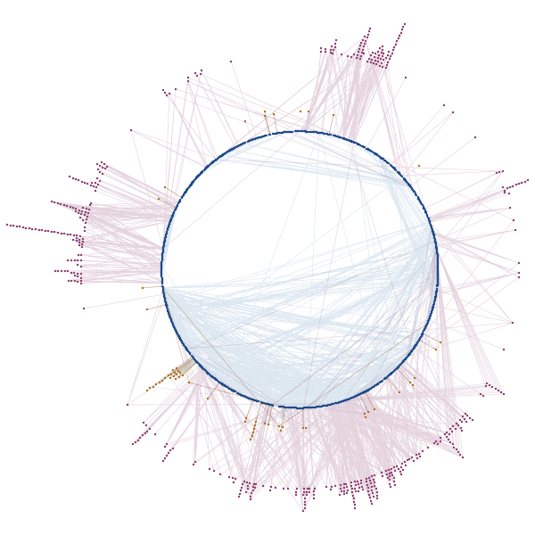
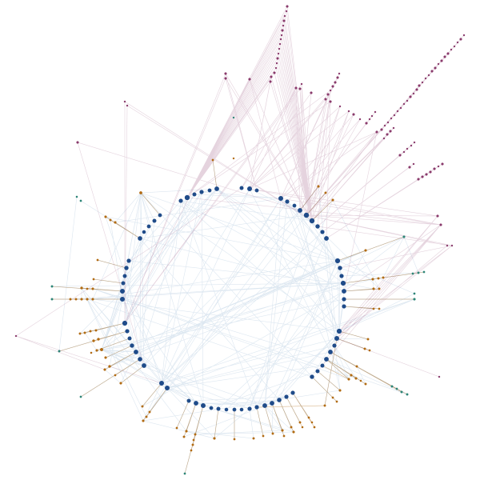
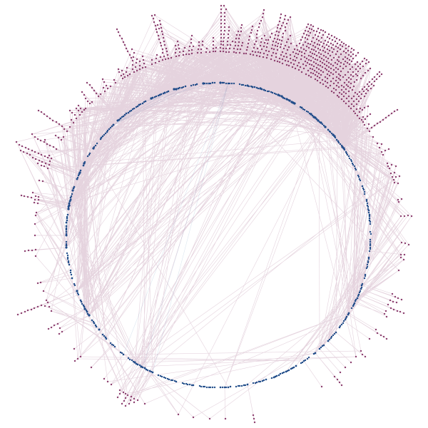

한국 법령 참조 지도
법률 조문을 장 순서대로 둥글게 놓고, 시행령·시행규칙 위임, 조문 사이 인용, 다른 법령 인용, 판례 연결을 한 그림에 모았습니다. 조문이나 판례를 누르면 연결된 것만 남고 원문과 연결 목록이 나옵니다.

상법 중심 관련 법령 지도
상법보험업법근로자퇴직급여 보장법
상법·보험업법·근로자퇴직급여 보장법 사이에서 서로의 조문을 가리키는 곳과 여러 법을 함께 다룬 판례를 한 그림에 모았습니다. 법 사이 인용은 보험업법 → 상법 218곳, 근로자퇴직급여 보장법 → 보험업법 7곳, 보험업법 → 근로자퇴직급여 보장법 6곳, 상법 → 보험업법 2곳이고, 두 법 이상을 함께 다룬 판례는 51건입니다.

개인정보 보호법
법 127조시행령 142조판례 130건
판례가 가장 많이 다룬 조문은 제71조(벌칙)와 제59조(금지행위)입니다.

보험업법
법 253조시행령 146조시행규칙 61조판례 145건
판례가 가장 많이 다룬 조문은 제158조(해산 후의 보험금 지급)와 2020년에 삭제된 제102조입니다.

상법
법 1,184조시행령 59조판례 456건
최근 판례가 가장 많이 다룬 조문은 제682조(제3자에 대한 보험대위)와 제64조(상사시효)입니다.

근로자퇴직급여 보장법
법 68조시행령 79조시행규칙 19조판례 95건
판례가 가장 많이 다룬 조문은 제8조(퇴직금제도의 설정 등)와 제9조(퇴직금의 지급 등)입니다.

형법
법 402조판례 909건
최근 판례가 가장 많이 다룬 조문은 제37조(경합범)와 제30조(공동정범)입니다.